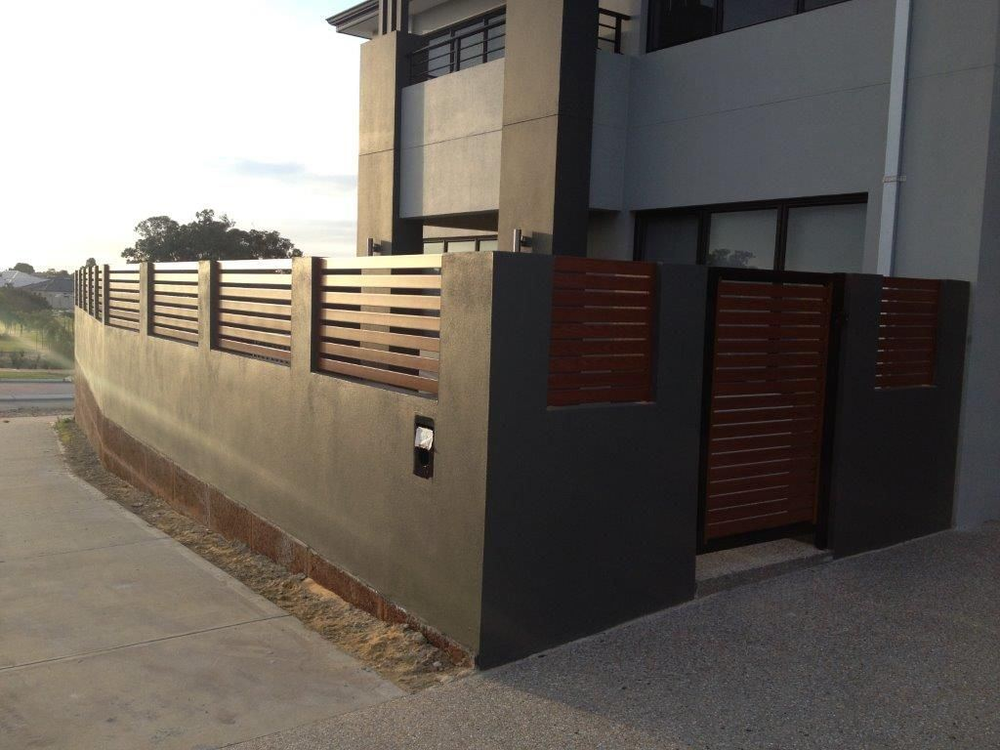
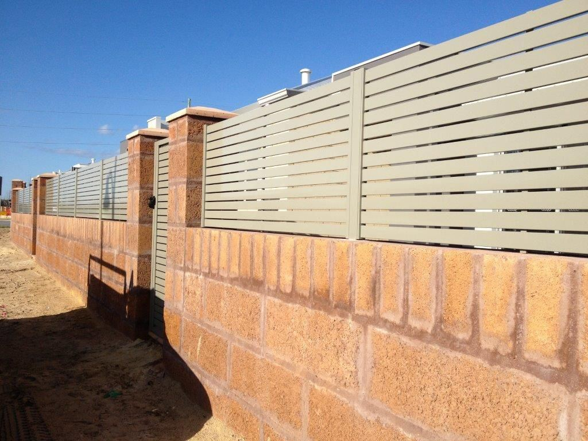
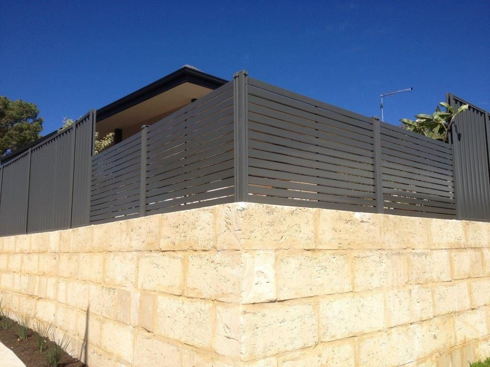
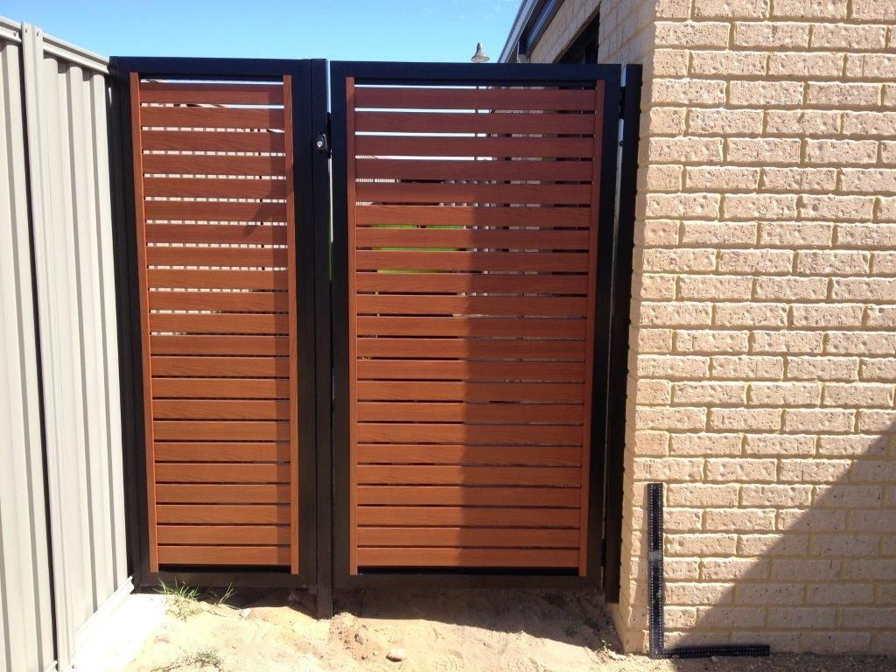
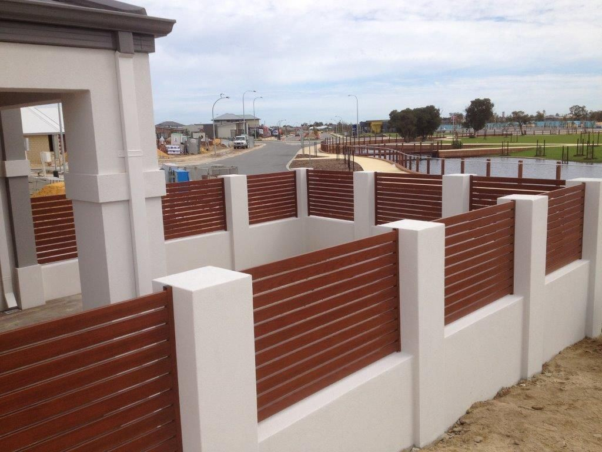
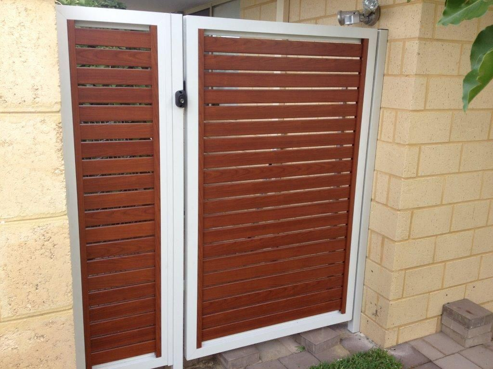
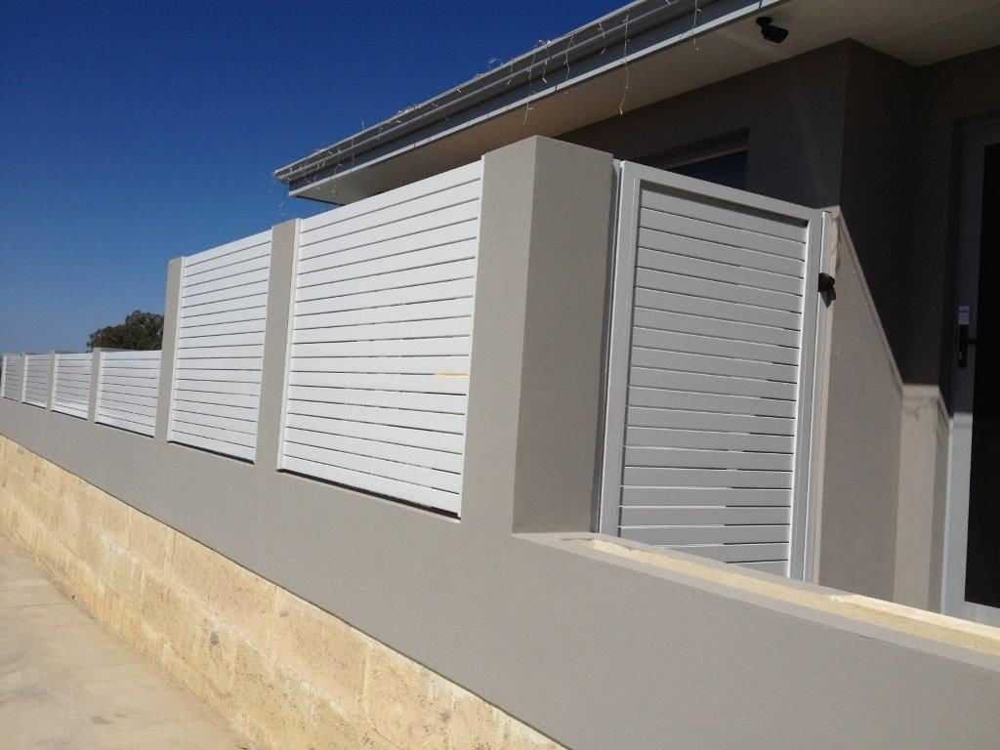

Quality batten gates & batten fencing, installed in Perth.
Quality that counts on the right side of the fence. Our Jandakot factory manufactures aluminium batten fencing and gates, batten gates and perforated metal gates for homes and businesses across Perth.



Our products
We specialise in a range of quality products which can be supplied to domestic and commercial clients throughout Perth.

Aluminium batten fencing
Made in our Jandakot factory, in styles to suit any home.

Aluminium batten gates
Side gates and double gates built to match your fence.

Batten gates
Durable, attractive gates in a wide range of styles and finishes.

Batten fencing
Infill panels between piers, on retaining walls and as front fences.

Open style pool fencing
Safety fencing that keeps children away from pool areas.

Perforated metal gates
A modern, private gate option we manufacture in-house.
A family business that takes pride in every fence
We are a family owned and operated business that was established in 1992 in Perth. We pride ourselves on excellent customer service and quality workmanship.
Our factory, based in Jandakot, manufactures aluminium batten fencing and gates, batten gates and perforated metal gates. By catering to our customers’ individual needs, you can be sure that you will receive the fencing solution you are looking for.
About us →

Why choose Fencing Finesse in Perth?
We are committed to providing you with the best possible service in every aspect of our business.
On time, within budget
We promise to deliver on time, within budget, and install your fences and gates with careful, expert precision and attention to detail.
Styles to suit any taste
Our designs are very attractive and come in styles to suit any taste, for residential and commercial clients alike.
Durable & reliable
The products that we use are durable, tough, safe and reliable. Give us a call to talk about your batten gates and fencing requirements.
Fences & gates we’ve built
Expert workmanship means you get the fencing you want, first time, every time. Tap a photo to see it full size.
Free measure & quote
Talk to one of our friendly fencing experts about batten gates, batten fencing, Colorbond gates, pool fencing or repairs.